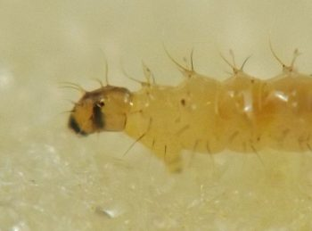
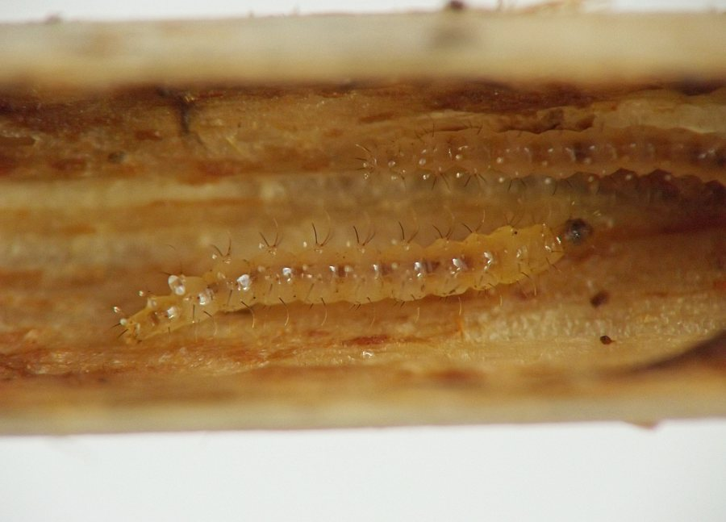
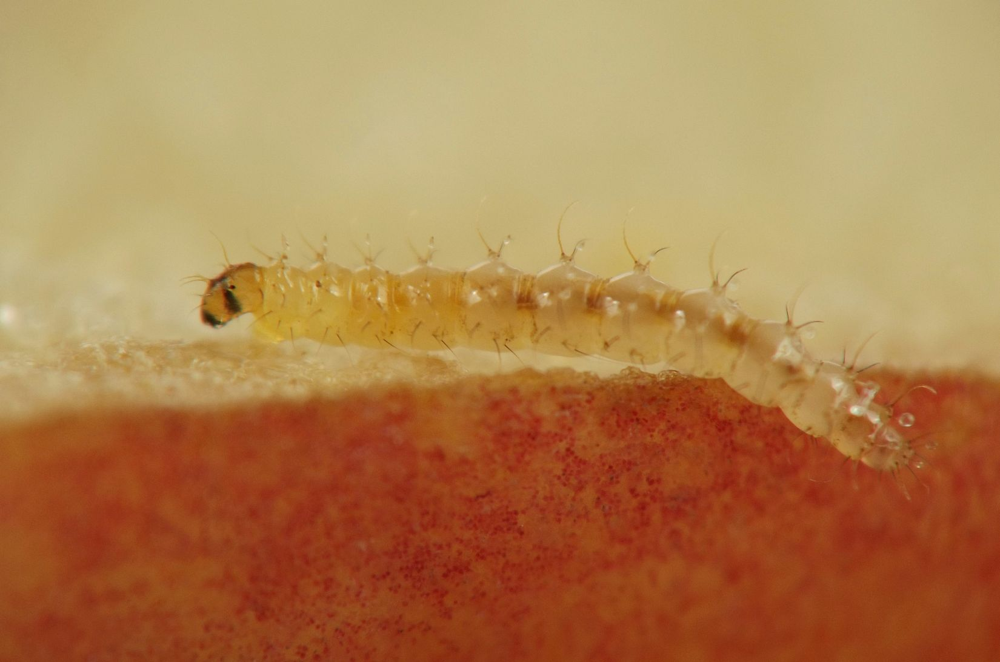
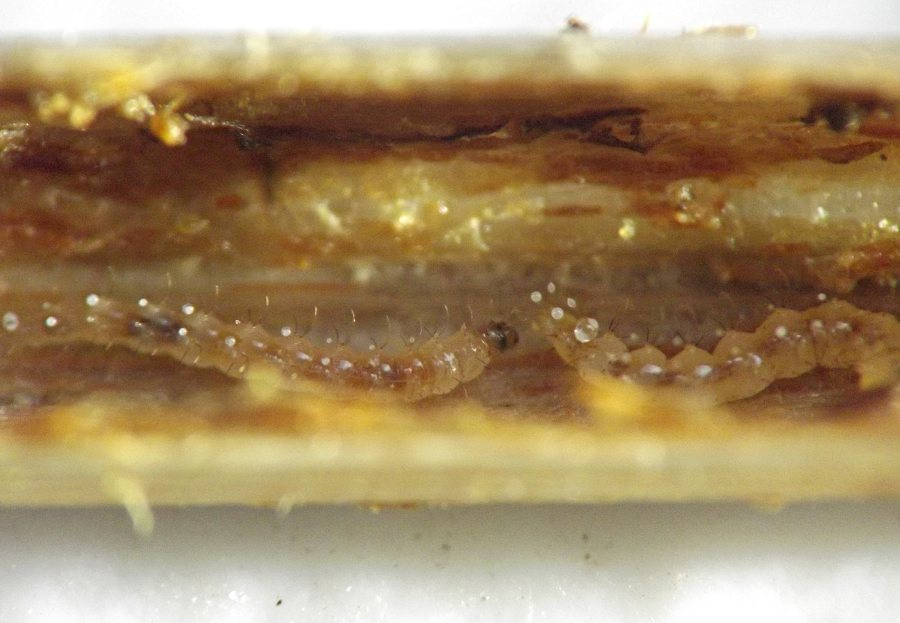
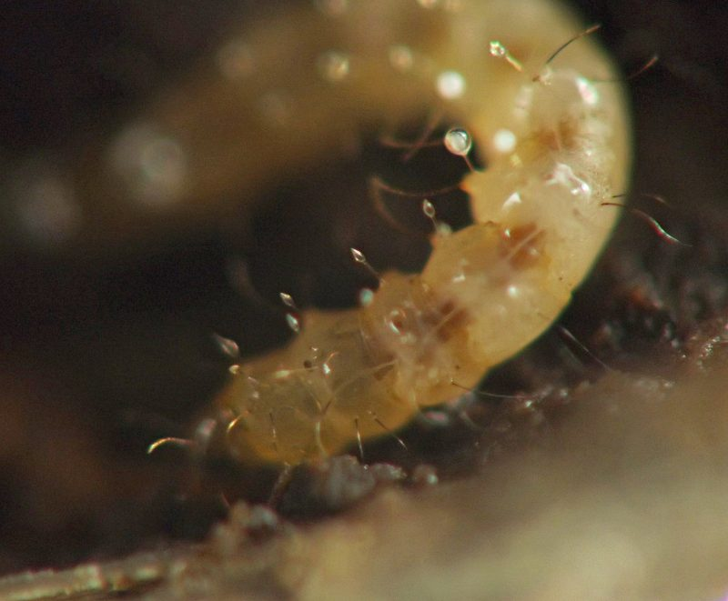
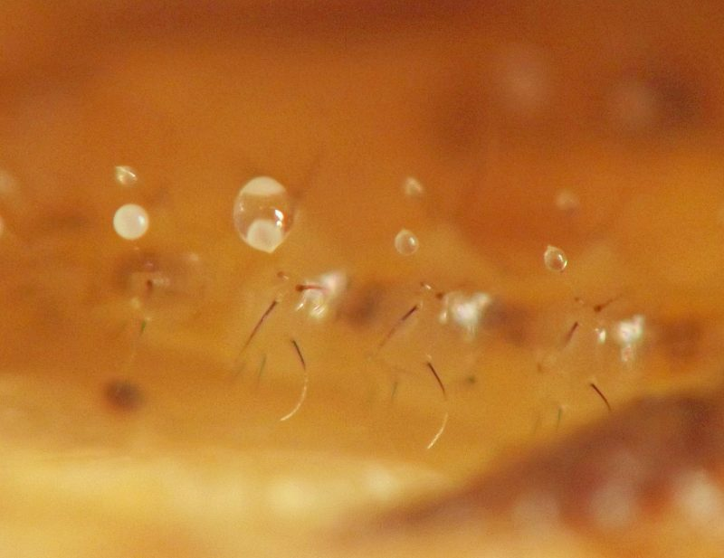
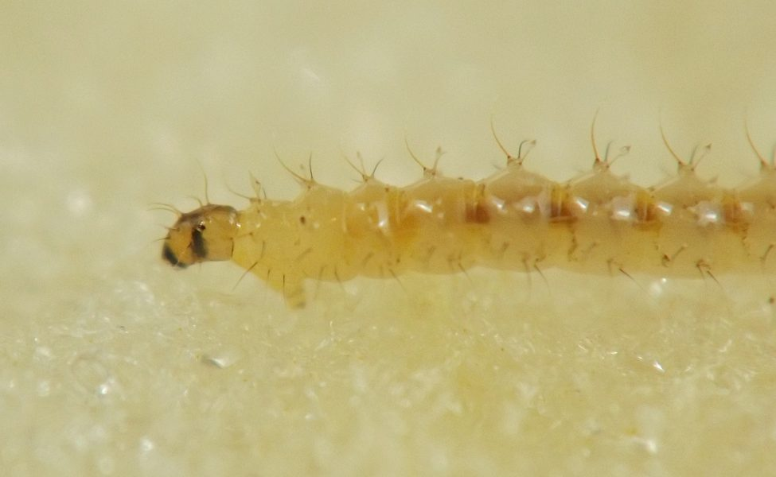
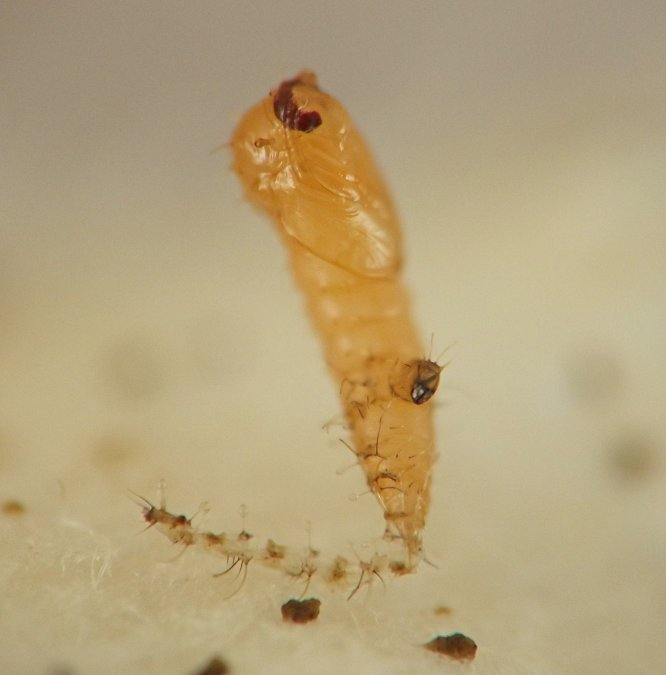
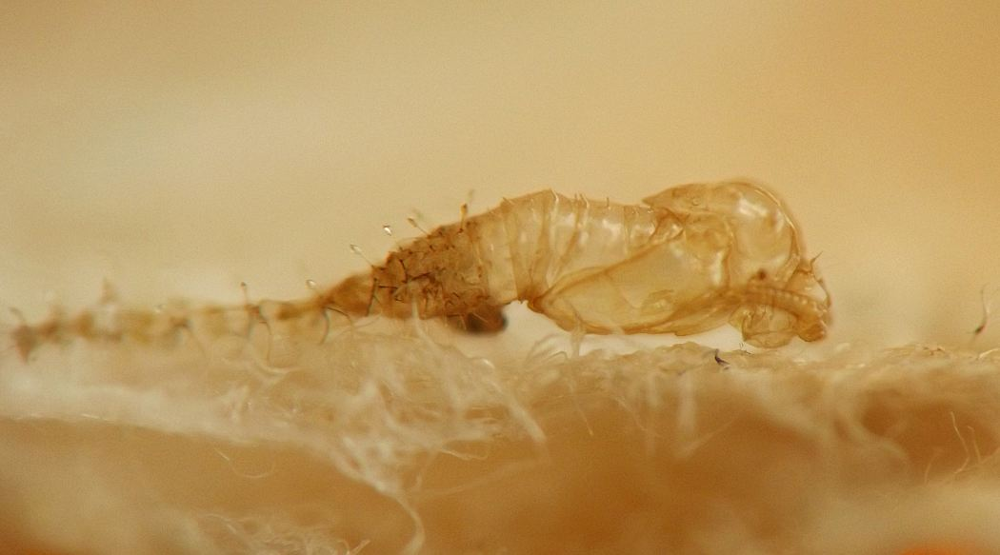
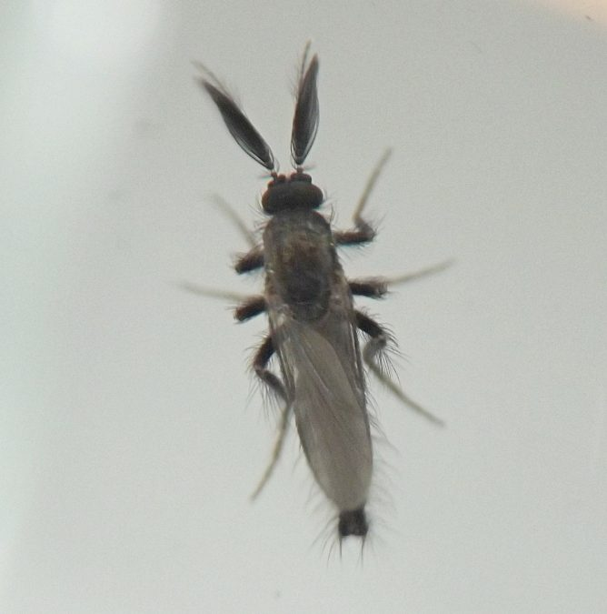

Internal feeder (Diptera: Ceratopogonidae) in Cryptotaenia
| Record no.: | 0801 |
|---|---|
| Feeding guild: | Internal feeder in stem |
| Taxonomy: | Diptera: Ceratopogonidae: Forcipomyiinae: Forcipomyia |
| Stages observed: | trace, larva, pupa, adult |
| Distribution observed: | IA |
| Hosts in Cryptotaenia: | C. canadensis (honewort) |
I have consistently found Forcipomyia larvae in association with Cryptotaenia. They may be found in the senescent stems of this plant in October and November, and then through the winter for those individuals who overwinter in the stems (which appears to be the majority of larvae). Often they are accompanied by a significant amount of clumpy, moist, dark brown frass along with obvious signs of feeding damage on the remnants of pith lining the inner walls of the stem.
The exact boundary between herbivory and saprophagy here is unclear, as I have not yet been able to discern the extent to which the host stems are alive when larvae first begin their feeding in autumn. However, it seems most likely that the larvae are saprophages, given that true herbivory has not been previously recorded in Forcipomyia as far as I know. I include this record in the survey results because of the persistence and predictability of the association with Cryptotaenia, which suggests an intentional choice on the part of the insect year after year and represents a fascinating ecological interaction. Of the few hundred species of herbaceous plants whose dead stems I have examined in search of insect life in my study area, I have recorded Forcipomyia larvae from very few hosts -- only Cryptotaenia and Laportea as of this writing (March 2026) -- and yet they show up in Cryptotaenia again and again, in at least four different sites across multiple years in my local area alone.

The larvae are also unique among stem-dwelling insects. They are elongate with a single pair of "prolegs" on the front of the thorax (officially known as a "prothoracic pseudopod"; see, e.g., Saunders (1924)), an ovoid head capsule with distinctive darker markings, and long setae to which milky or transparent drops of exudate often adhere. The function of the exudate appears to be defensive (see below).
I collected several larvae in early- to mid-October, 2021, and captured photographs as well as this video of a larva crawling. The larvae were easy to sustain on senescent stems of Cryptotaenia kept hydrated in a suitably (but not overly) humid vial, as long as there was some soft organic matter remaining in the stem interiors on which they could graze. When done feeding they pupated in the stem or on paper toweling provided in the rearing container. The molted exoskeleton of the final-instar larva enshrouded the rear part of the pupa. Adults from this batch of larvae emerged in early November.
Also, in several winters including winter 2025-2026, I observed numerous larvae overwintering in the lower portions of dead stems of the host. One particularly robust Cryptotaenia stem I found in March 2026 contained at least a dozen larvae.
The seasonality of larvae and adults of Forcipomyia has been the subject of some discussion, with authors sometimes expressing confusion or a lack of understanding about the question of summer generations. As Bystrak and Messersmith (1980) explain (p. 115):
Apparently either the adults or the eggs [of Forcipomyia pinicola] or some combination thereof oversummers, but the exact situation has not been determined. Larvae have not been found between 2 April and 22 October. In the same area, adults have been collected only between 15 April and 17 October. Although other species in this subgenus have two or more generations per year, we have been unable to locate a summer generation in this one. We could find winter larval sites with little effort, but were never able to locate summer sites even though we spent more time and effort at it. Saunders (1924), in speaking of F. radicola, suggests that some species may exhibit a summer ecology that is totally different from the winter one in order to explain his consistent inability to locate them. A more logical explanation is that summer generations do not occur.
Regarding the droplets of liquid on the larvae, these have apparently been studied in some detail for at least some species in the genus. Wirth and Grogan (1978) provide a summary of these findings by several authors, including the fact that the droplet-bearing setae apparently have a cavity inside that is connected to a greatly enlarged subdermal cell, and it is these enlarged cells that produce and/or regulate the production of the drops (Frew 1923). It has also been shown that the droplets can help protect the immature stages from predators, as Wirth and Grogan (ibid., pp. 100-101) relate in the following description of an experiment by Hinton (1955):
Using a laboratory colony of the ant Lasius niger L., [Hinton and his students] found that the ants would attempt to attack larvae of Forcipomyia (F.) nigra (Winnertz) when the latter were placed within their enclosure. Usually, whenever the ants came close enough to bite the midge larvae, they touched one or more droplets of liquid on the hastate setae, at which time they immediately dropped the larvae and usually spent several minutes cleaning themselves. Experiments at different relative humidities showed that at low humidities, when droplets were not formed, larvae were dropped less quickly by the ants than at high humidities when the setae had large drops on their apices. If the last larval skins were removed from midge pupae, the ants would carry the pupae to their nest; they also succeeded in carrying away pupae if they could attack them from the front and dislodge them from the larval cuticle. But if the ants approached the pupae from the side or rear, they always became smeared with the hygroscopic substance remaining on the larval cuticle and would retire and clean themselves. When the midge pupae form their usually complete circular aggregations, they form nearly a perfect defensive barrier against such attacks by predators. The chemical nature and mode of action of the hygroscopic substance remain a mystery.
My cursory review of the literature did not turn up previous records of Forcipomyia from stems of wild herbs, but the larvae have apparently been collected from inside "rotting stalks of potato plants in a rubbish heap" (Lavigne 1961, referring to a report from Saunders (1924)).
Lastly, a personal note: I find the larvae delightful and the adults are also unusual. Appearing in my life for the first time as they did around Halloween, their flame of quirky essence burned steadily and convivially amid the rogue's gallery of spooky, fantastic, and whimsical creatures and overall climate of mystery that mark the season. In an astonishing look at Forcipomyia's role in the "rogue's gallery" of Animalia, Murray (2026) provides an excellent illustrated account of Forcipomyia larvae from around the world, including individuals with ornate and bizarre "balloons" of exudate. Some of these spectacular larvae have apparently not yet been reared in order to associate them with their adult form.

 Prev
Prev
{kind=link}
{kind=link}

{kind=link}

{kind=link}

{kind=link}

{kind=link}

{kind=link}

{kind=link}
{kind=link}

{kind=link}

{kind=link}
{kind=link}
{kind=link}
{kind=link}
{kind=link}
{kind=link}
{kind=link}
{kind=link}
{kind=link}
{kind=link}
{kind=link}
{kind=link}
- Bystrak, P.G. and D.H. Messersmith. 1980. A new species of midge of the genus Forcipomyia Meigen (Diptera: Ceratopogonidae) from North America. Proceedings of the Entomological Society of Washington 82(1): 108-116.[return to in-text citation]
- Frew, J.G.H. 1923. On the larval and pupal stages of Forcipomyia piceus Winn. Annals of Applied Biology 10: 409-441.[return to in-text citation]
- Hinton, H.E. 1955. Protective devices of endopterygote pupae. Transactions of the Society for British Entomology 12: 49-92.[return to in-text citation]
- Lavigne, R.J. 1961. Occurrence of Forcipomyia ciliata (Winnertz) in North America with notes on its biology (Diptera: Ceratopogonidae). The Pan-Pacific Entomologist 37(2): 108-110.[return to in-text citation]
- Murray, A. 2026. The biting midge larvae of Forcipomyia. In "A Chaos of Delight* [website]. Retrieved February 3, 2026 from https://www.chaosofdelight.org/forcipomyia.[return to in-text citation]
- Saunders, L.G. 1924. On the life history and the anatomy of the early stages of Forcipomyia (Diptera, Nemat., Ceratopogoninae). Parasitology 16(2): 164-213.[return to in-text citation]
- Wirth, W.W. and W.L. Grogan Jr. 1978. Notes on the systematics and biology of the biting midge, Forcipomyia elegantula Malloch (Diptera: Ceratopogonidae). Proceedings of the Entomological Society of Washington 80(1): 94-102.[return to in-text citation]
Page created: February 2, 2026. Last update: March 5, 2026